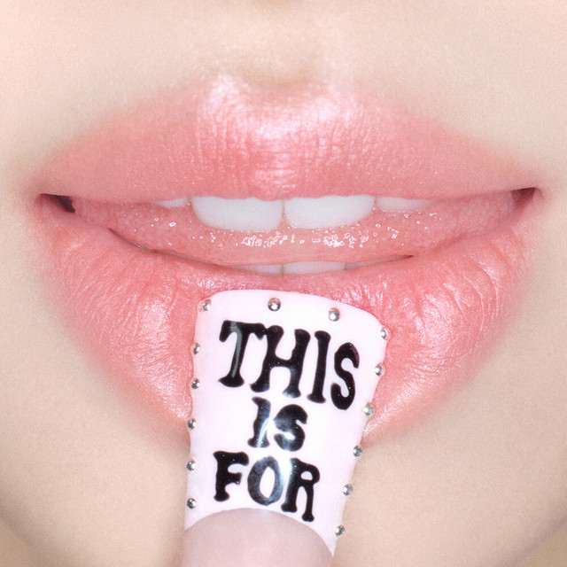

Discografia

The Story Begins
Fecha de lanzamiento: 20 de octubre de 2015
Lista de canciones:
- "Like Ooh-Ahh"
- "Do It Again"
- "Going Crazy"
- "Truth"
- "Candy Boy"
- "Like a Fool"

Fecha de lanzamiento: 20 de octubre de 2015
Lista de canciones:
